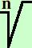

Razionalizzazione con una radice di indice superiore a due al denominatore (caso generale)
Razionalizzare
con n > s
per togliere la radice sotto devo trasformare il denominatore in una potenza uguale all'indice della radice; posso farlo moltiplicando sotto per
bn-s pero' per non variare di valore l'espressione dovro' moltiplicare per bn-s anche al numeratore (in questo modo sara' come moltiplicare per 1 e il valore dell'espressione non varia)
|
a |
|
bn-s |
|
| = |
-------- |
· |
-------- |
= |
|
bs |
|
bn-s |
|
Ottengo
e semplificando la radice con la potenza ottengo il risultato
|